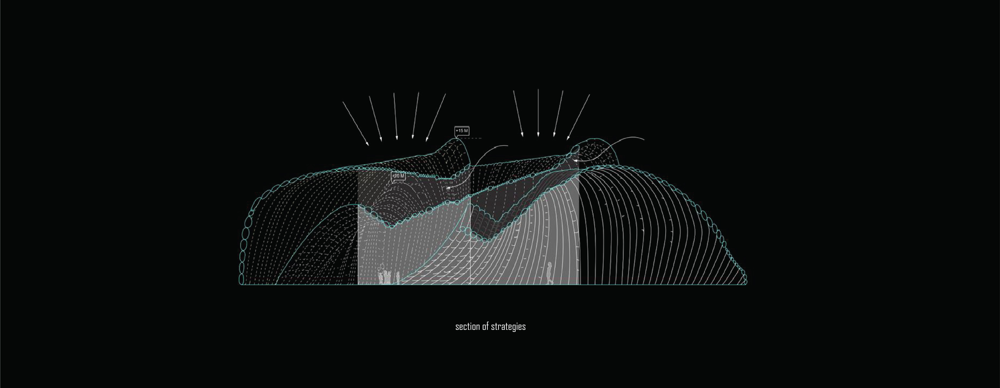
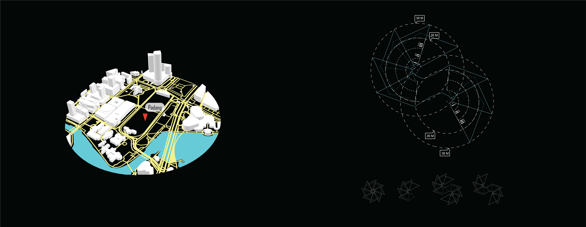

INFLATABLE MO[VE]MENT
Summary
This thesis is focusing on inflatable structures for open public space.Inflatable structures are known to be mobile and configurable. It is one of the more ideal structures for a temporary event and contains spatial potential that has yet to be fully discovered. This thesis research involves the documentation of a list of existing inflatable structures on open spaces and utilising it as a catalyst to make further exploration in the form. Making use of polygonal seams in one of the inflatable studies, Aeromorph by Tangible Media Group, to aid the research to be developed to design an inflatable structure in Singapore’s context and also presenting it as a more visually engaging temporal structure.
About Me
Michelle is a city walker. She explores regularly, sketches occasionally and rarely writes. She is a fan of little moments that matter and takes pleasure in indulging in the sensual environment of urban spaces. She likes to read between the lines and converse in lizard language.Name
Michelle Chen
Mentor
Kenneth Tracy
Typology
Temporal Structure, Inflatable
Site Location
Singapore

![]()
![]()
Inflatable Typologies
Pneumatically activated objects could be seen in our everyday life such as camping tents, sleeping bags, plane emergency exit slope, bouncing castle and many more. All these objects share a common trait as being able to be activated in a short time for a short-term activity. The convenience from its compact mechanism and simple assemble elements make it one of the more favourable mechanism when it comes to fulfilling a temporary usage.The flexibility from its freeform shape also enabled it to be adaptable to any space conditions. These pneumatically activated spaces emit an out of the ordinary experience for visitors due to its exaggerated curvature and the immersive atmosphere created. This creates a different experience than a typical structure.
Different built inflatable structures around the world are categorised according to its typologies, structure type, material and scale. There are two major types of inflatable structure: air-supported and air-inflated. Air-supported structure is indicated as blue colour while air-inflated structure is indicated as yellow colour.
Open Space in Singapore
Open space in Singapore has been utilised in various fashion, through formal or informal means. Events in open spaces can be split into two groups, formal and informal. Formal events refer to pre-planned events on open field that could occur within a day. Informal events refer to impromptu gathering for a short 15-30 min.These formal and informal events share a common spot that they both treat an open field as the activity centre. These open fields sometimes come with a lack of shelter, simply acting as a plain canvas for events to take place. Involvers of open spaces without proper shelter will eventually look into a temporary solution as a shield. The shelter in Singapore open spaces comes in different forms and sizes. They can go from macroscale to nanoscale, from large make-shift tents to the wearable shield.
This comes the question of how open spaces could be revamped with a more engaging temporal structure that provide an embodied experience for visitors. Inflatable being a quick and visually engaging mechanism is thus the perfect candidate for this purpose.

Experiments
For this thesis, the focus is on air-inflated structure where the air will be pumped into the enclosed skin membrane to create a series of inflated structural elements. These will be used to support the standing of the overall structure.Taking from Aeromorph, different sizes and scales of polygon shapes have experimented. Clear polyethene fabrics are cut into standard sizes and inflated to observe the folding action in slower motion. The scales and proportions of the polygonal seams are varied in X, Y and Z width in following. With the different angles controlled, the next challenge is to control the direction of the angle. A clock-wise fold will differ from an anti-clockwise fold. The shape leading to it could form a zig-zag shape or an arch shape and the direction becomes the determinant of the shapes formed. Through the different bending angles experimented, the airbags can then be stitched up together to form a long string of air pockets which then form an arch that can be twisted in different directions with slanted polygonal welding. These could continue as a continuous form to be a tunnel or varied with a skin membrane stitched in between to form a different curved surface. The twisted arch is also explored by arranging over with one another.
Design Parameters
When these sub-structures are arranged radially, the higher segment will go over the lower segment, creating the overlapping scenario. As the sub-structure overlaps over one another, the top structure will protect the covered structure below by absorbing the majority of the solar radiation, thus acting as a heat shield for the segment below.As the taller segment overlaps with the shorter segment, an air gap is also created in between. When arranged radially with varying radius, the width of these air gaps will vary allowing for more or less wind entry. When the sub-structures are arranged in a full circle, it creates a turbine of wind entry into the overall structure.
The inflatable structure would require a dedicated maintenance space. By utilising the radial arrangement, an inner circle is formed which is the inflation starting point for the blooming structure. This inner circle then becomes the service space for the events. Electric set-up such as fan, ventilator and other maintenance machinery will then be easily hidden behind the structure.
As the twisted arch is stitched up together, it creates water channels which are efficient ways to discharge water run-off from the inflated surface. However, with a curved surface, the direction of water flow is bound to be less uni-directional. With having the main water channel in mind, the edge of the surface is hinged upwards to form a seemingly “checkmark” form. The hinge positions are experimented, going from the edge to the central and back to the edge again. The shape is iterated with the criteria that as the sub-structures are overlapped, the water channels will be directed to the strategic main channels.


Iterations
The shape of the sub-structures is iterated from a rhombus geometry. The geometry allows for the wind entry on the ground and a greater overlap over another when engaged in a radial manner. The points of the rhombus are shifted here and there with criterias in mind and slowly the kinks are introduced in for entry points.

Selected Site
The design proposal focuses on providing shelter for a commercial event. The plot at Padang is eventually set due to it situated in between several crowd spots and has the largest plot area to demonstrate how wide the structure can go to. The Idea of the structure is to bring patrons from one access point to another while going through the carousel fun of the inflatable structure.Structure Arrangement
Conventional commercial events will require the function of an assembly space for sales announcement, individual booth space and a back service area.The structure is intended to bring a more distinct difference between two crowds, the patrons leaning towards the shopping experience and patrons leaning towards having an embodied experience while getting from one point to another. The activity space is categorised into three zones: walking path, shopping path and service path. Each zone is dedicated to different crowd with the indicated needs. The kinks created also act as a partition barrier for each booth while the central connection is capable to hold larger activity as a central hall.
Site Series
When placed in another site, this configuration can expand out by having more sub-structures to accommodate for larger-scale events or be reduced for smaller enclosed events. The flexibility of such design allows for the overall to be a swirl, a circle or multiplied across the site depending on the site materials.Colour Studies
Since the chosen site is at Padang, a place where there is collective memories with historical significance, red and white colours are chosen as the primary colours to play around. Colour studies are conducted using a different range of gradient. The colour is an added value to the structure that truly accentuates the attractions of an inflatable structure as a whole.